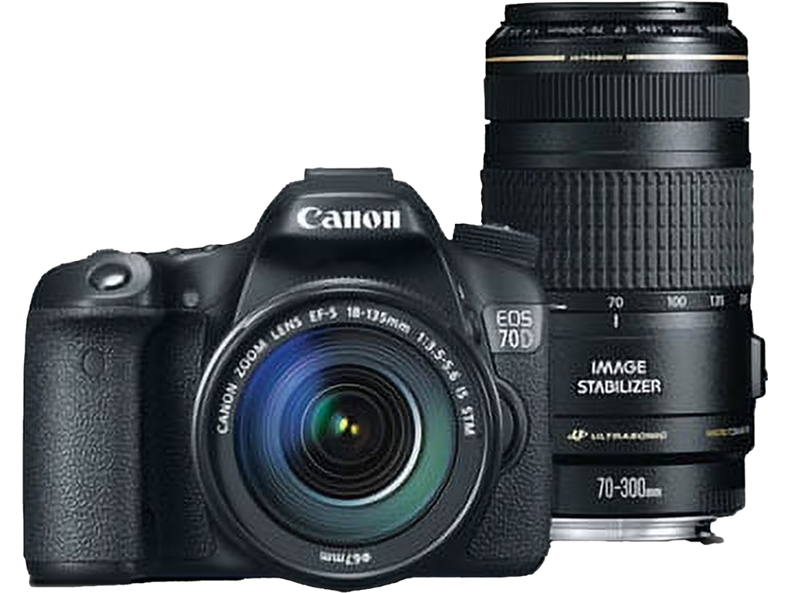

Away
38번국도를 따라서
태백으로 떠나요.
🛣️ 강원도 산골 드라이브의 묘미
고속도로가 연결되지 않은 태백으로 가기
위해선 38번 국도를 타야 한다.
국도이긴 하지만 신호등이 많이 없고 통행량도
많지 않아 쾌적한 드라이브를 즐길 수 있다.
커브길이 많고 과속단속구간이 많아 속도를 낼
순 없지만, 영월에 진입하면서부터 펼쳐지는
높은 산들에 드라이브가 즐거워진다.
태백에 가까워질수록 귀가 먹먹해진다.
두문동재 터널을 지나면 산소도시 태백에
입성했음을 알리는 시원한 파란색 조형물이
나타난다.
이 조형물을 통과하면 급격한 내리막 커브길이
이어진다. 멋진 풍력 터빈들을 감상하며
조심스럽게 내려오면 드디어 태백시내에 진입!
Milkyway
태백 은하수 여행, 나의 은하수 촬영 가이드
태백선수촌
가로등 없는 만항재길을 한참 올라가야 해서 조금 무섭긴 하지만, 선수들이 사용하지 않을 땐 빛이 거의 없다. 주차할 수 있는 공간도 있어서 안전하게 촬영할 수 있다.
지도보기
🌌 별 쏟아지는 태백의 밤
태백의 밤하늘은 정말 특별했어요. 도시의 빛 공해에서 벗어나 온전히 별들에게 집중할 수 있었죠. 캐논 70D와 함께 그 장엄한 순간을 담아낸 저의 은하수 촬영 세팅을 공개합니다!
📸나의 은하수 여행 장비
캐논 EOS 70D

태백 은하수 여행의 멋진 추억을 담아줄 캐논 EOS 70D는 은하수 사진 촬영에 매우 적합한 DSLR 카메라입니다. 🌌
뛰어난 APS-C CMOS 센서와 DIGIC 5+ 이미지 프로세서를 탑재하여, 어두운 밤하늘의 미세한 빛까지도 선명하게 담아낼 수 있습니다. 은하수 촬영 시 중요한 고감도 저노이즈 성능이 탁월하여, ISO를 높여도 깔끔한 이미지를 얻을 수 있다는 점이 큰 장점이죠. 또한, 회전형 터치 LCD는 다양한 각도에서 편리하게 촬영할 수 있게 해주며, 특히 밤하늘을 올려다보며 촬영할 때 유용합니다. 어두운 환경에서 수동 초점을 맞출 때도 라이브 뷰를 통해 정밀하게 조작할 수 있어, 별들을 뚜렷하게 담아내는 데 큰 도움이 됩니다.- ✨ 2,020만 화소 APS-C CMOS 센서: 넓은 다이나믹 레인지와 뛰어난 해상도를 제공합니다.
- 💡 ISO 100-12800 (확장 25600): 은하수 촬영에 필요한 고감도 성능을 지원합니다.
- 🔗 Wi-Fi 기능: 촬영한 사진을 스마트폰으로 바로 전송하여 공유하거나, 원격으로 카메라를 제어할 수 있습니다.
- 🚀 초당 7매 고속 연사: 은하수 타임랩스 등 다양한 촬영 기법에 활용할 수 있습니다.
🌌 은하수 촬영 세팅: 나의 시선으로 담다
별이 쏟아지는 태백의 밤하늘 아래, 제가 직접 캐논 EOS 70D로 은하수를 담았던 순간을 떠올리며 그날의 세팅을 소개해 드릴게요! ✨| 항목 | 설정 | 설명 |
|---|---|---|
| 🔭렌즈 | 캐논 EF-S 10-18mm F4.5-5.6 IS STM | 은하수를 넓게 담기 위한 광각 렌즈. 10mm 화각은 하늘의 광활함을 표현하기에 최적. |
| 📐화각 | 10mm (APS-C 크롭바디 기준 약 16mm 상당) | 초광각으로 더 많은 별과 주변 풍경을 한 장면에 담아 웅장함 표현. |
| ⭕조리개 | F/4.5 (최대 개방) | 밤하늘의 희미한 빛을 최대한 많이 받아들이기 위해 가장 낮은 F 값 설정. |
| ⏳셔터 속도 | 25초 (500법칙 적용) | 별이 흐르지 않도록 적정 셔터 속도 유지. 충분한 빛 확보. |
| 🔆ISO 감도 | 3200 | 노이즈와 밝기 사이의 균형을 찾아 설정. 70D의 고감도 저노이즈 활용. |
| 🎯초점 | 수동 초점 (MF), 무한대 | 별은 무한대에 있으므로, 수동으로 무한대 초점 설정. 라이브 뷰 확대하여 정밀 조작. |
태백의 밤하늘 아래, 캐논 EOS 70D와 함께 잊지 못할 은하수 사진을 만들어보세요! 🌌
🎒 은하수 촬영, 이것도 챙기세요!
성공적인 은하수 촬영을 위해 제가 늘 챙기는 필수품들입니다. 이 아이템들이 있다면 더욱 완벽한 밤하늘을 담을 수 있을 거예요.- 🏔️튼튼한 삼각대: 장노출 시 흔들림 방지
- 📌릴리즈 (유선/무선): 셔터 흔들림 방지
- 🔋여분의 배터리: 저온 환경 대비
- 🔦헤드 랜턴 (붉은 조명 기능): 장비 세팅 & 이동용
- 🧤따뜻한 옷과 장갑: 체온 유지
- ☕따뜻한 음료: 추위 극복
태백 포토스팟 후기
별빛이 쏟아지는 태백은 도시의 불빛이 없어 사진을 찍기 좋았습니다. 조금은 관광지와 거리가 먼곳이라는 점이 혼자떠나온 여행에 사색을 즐기기에 더할 나위 없이 좋은 곳이었습니다.
Food
한적한 숲속
사슴과 함께한 브런치
🌌 초록뿔언덕카페
혼자 떠나온 여행, 차갑게 식은 몸을 녹일 곳을 찾다가 우연히 '초록불언덕'이라는 이름을 발견했다. 간판에 그려진 순록뿔이 마음에 들어 홀린 듯 들어섰다. 아침 햇살이 스며드는 창가에 자리를 잡고 메뉴판을 꼼꼼히 살폈다. 밤하늘을 닮은 듯 고요한 공간에서 나는 달콤한 위로가 필요했다. 이름이 특이했던 '고구마라떼'를 주문했는데, 한 모금 마시는 순간 밤새 쌓인 피로가 사르르 녹아내리는 기분이었다. 고구마의 은은한 단맛과 따뜻한 우유가 만나 속이 편안해지는 느낌. 굳이 말을 하지 않아도, 이곳의 온기가 온전히 전해졌다. 커피가 아니라서 브런치가 될까 싶었지만, 따뜻한 라떼 한 잔만으로도 충분한 한 끼가 되었다. 조용하고 평화로운 분위기 속에서 고개를 들면 푸른 숲이 보일 것만 같은 느낌. 거창한 브런치는 아니었지만, 나만의 속도로 숨을 고르고, 다음 여정을 이어갈 힘을 얻는 시간이었다. 별을 찾아 떠난 여행의 끝에, 마음속에 또 하나의 빛나는 별을 발견한 기분이다. 다음에 또 혼자만의 여행을 떠난다면, 다시 이 언덕을 찾게 될 것 같다.
나의 카페 후기
맛있는 디저트와 향이 좋은 차를 멋진풍경과 함께하니 여행에 느낌이 물씬.
혼자만의 여행에 외롭지 않게 해준 사슴들이 너무좋았습니다.
Stay
별빛이 쏟아지는
꿈결같은 글램핑
낮에는 평화로운 숲속
밤에는 은하수 가득
별을 보러 혼자 떠나는 여행이 벌써 몇 번째인지 모르겠다. 이번엔 좀 더 특별한 곳을 찾아 강원도 매봉산 깊은 곳에 있다는 '천상의 숲' 글램핑장으로 향했다. 해발 1,000미터가 넘는 고지대, 이름처럼 정말 하늘에 닿을 듯한 곳이었다. 도착하자마자 숲이 주는 고요함과 맑은 공기에 마음이 정화되는 기분이었다. 흔한 번잡함 없이 오직 바람 소리와 새소리만 들리는 곳. 화려한 시설보다는 자연과의 조화를 중시한 숲속 야영장이었는데, 오히려 혼자만의 시간을 보내기에 더할 나위 없이 좋았다. 깔끔하게 정돈된 데크에 짐을 풀고 따뜻한 커피 한 잔을 내리며 해가 지기를 기다렸다. 그리고 밤이 되었다. 드디어 내가 이곳에 온 이유를 만나는 시간. 랜턴 불빛마저도 방해가 될까 조심스러웠다. 불을 끄고 밤하늘을 올려다보는 순간, 숨이 멎는 것 같았다. 매일 보던 밤하늘과는 차원이 다른 풍경이었다. 눈앞에 쏟아지는 별빛들, 그리고 그 위로 옅은 은하수가 선명하게 펼쳐졌다. 도시의 불빛에 가려져 있던 우주의 민낯을 마주한 기분이었다. 별을 찾아 떠나온 여행의 끝에, 나는 드디어 '진짜' 하늘을 만났다. 외롭기보다 온전한 나 자신이 되어 자연의 경이로움 속에 녹아들 수 있었던 밤. **'천상의 숲'**이라는 이름은 과장이 아니었다. 이곳은 별을 보러 가는 곳이 아니라, 별과 함께 머무는 곳이었다. 마음속에 깊은 여운을 남겨준 최고의 여행지였다.
나의 숙소 후기
조용한 산속에서 즐기는 여유와 별빛이 쏟아지는 밤하늘을 경험해보세요.
함께 태백으로의 여행 어떠셨나요?
소원을 담아 여행의 후기를 남겨주세요.